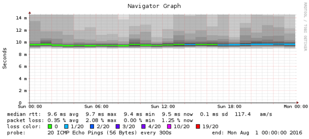
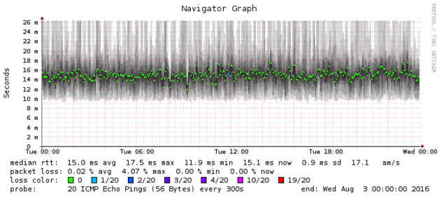
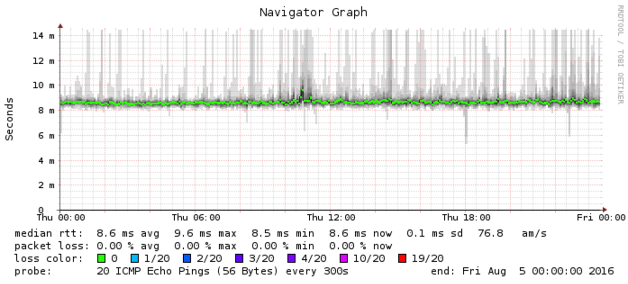

Recently I activated new cable ISP service at my home and needed to purchase a cable modem. There were only a few candidate devices that supported at least 24 downstream channels (preferably 32), and did not contain an integrated router or access point.
The first modem I tried was the Arris SB6190, which supports 32 downstream channels. It is based on the Intel Puma 6 SoC, and looking at an older release of the SB6190 firmware source reveals that the device runs Linux. This device, running the latest 9.1.93N firmware, goes into a failure mode after several days of uptime which causes it to drop 1-2% of packets. Here is a SmokePing graph that measures latency to my ISP's recursive DNS server, showing the transition into the “degraded” mode:

It didn't drop packets at random, though. Some traffic would be
deterministically dropped, such as the parallel A/AAAA DNS lookups generated by
the glibc DNS stub resolver. For instance, in the following tcpdump output:
[1] 17:31:46.989073 IP [My IP].50775 > 75.75.75.75.53: 53571+ A? www.comcast6.net. (34)
[2] 17:31:46.989102 IP [My IP].50775 > 75.75.75.75.53: 14987+ AAAA? www.comcast6.net. (34)
[3] 17:31:47.020423 IP 75.75.75.75.53 > [My IP].50775: 53571 2/0/0 CNAME comcast6.g.comcast.net., […]
[4] 17:31:51.993680 IP [My IP].50775 > 75.75.75.75.53: 53571+ A? www.comcast6.net. (34)
[5] 17:31:52.025138 IP 75.75.75.75.53 > [My IP].50775: 53571 2/0/0 CNAME comcast6.g.comcast.net., […]
[6] 17:31:52.025282 IP [My IP].50775 > 75.75.75.75.53: 14987+ AAAA? www.comcast6.net. (34)
[7] 17:31:52.056550 IP 75.75.75.75.53 > [My IP].50775: 14987 2/0/0 CNAME comcast6.g.comcast.net., […]
Packets [1] and [2] are the A and AAAA queries being initiated in parallel.
Note that they both use the same 4-tuple of (Source IP, Destination IP, Source
Port, Destination Port), but with different DNS IDs. Packet [3] is the
response to packet [1]. The response to packet [2] never arrives, and five
seconds later, the glibc stub resolver times out and retries in single-request
mode, which performs the A and AAAA queries sequentially. Packets [4] and
[5] are the type A query and response, and packets [6] and [7] are the
AAAA query and response.
The Arris SB6190 running firmware 9.1.93N would consistently interfere with these parallel DNS requests, but only when operating in its “degraded” mode. It also didn't matter whether glibc was configured to use an IPv4 or IPv6 nameserver, or which nameserver was being used. Power cycling the modem would fix the issue for a few days.
My ISP offered to downgrade the firmware on the Arris SB6190 to version 9.1.93K. This firmware version doesn't go into a degraded mode after a few days, but it does exhibit higher latency, and more jitter:

It seemed unlikely that Arris would fix the firmware issues in the SB6190 before the end of my 30-day return window, so I returned the SB6190 and purchased a Netgear CM600. This modem appears to be based on the Broadcom BCM3384 and looking at an older release of the CM600 firmware source reveals that the device runs the open source eCos embedded operating system.
The Netgear CM600 so far hasn't exhibited any of the issues I found with the Arris SB6190 modem. Here is a SmokePing graph for the CM600, which shows median latency about 1 ms lower than the Arris modem:

It's not clear which company is to blame for the problems in the Arris modem. Looking at the DOCSIS drivers in the SB6190 firmware source reveals copyright statements from ARRIS Group, Texas Instruments, and Intel. However, I would recommend avoiding cable modems produced by Arris in particular, and cable modems based on the Intel Puma SoC in general.